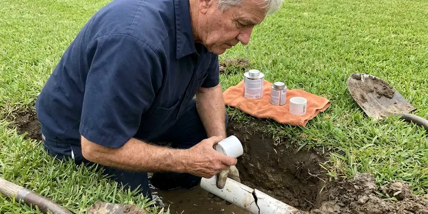

Emergency Plumber in Oklahoma City, OK
When a plumbing emergency happens in Oklahoma City, OK, you need fast, dependable help. JBK Plumbing is ready to respond around the clock.
- Satisfaction Guarantee
- Upfront Pricing
- Quick 24/7 Response
- Licensed Oklahoma Plumbers

Get Immediate Emergency Plumbing Help in Oklahoma City, OK.
Call now and a live dispatcher will walk you through shutting off water while a plumber heads your way.
Round-the-Clock Emergency Plumber Service You Can Trust in Oklahoma City, OK
When plumbing failures threaten your property, JBK Plumbing is your reliable partner. We offer complete emergency plumbing services throughout Oklahoma City, OK, minimizing damage and restoring your peace of mind swiftly.
Our expertise includes:
- Sewer line clogs and backups
- Professional drain clearing for severe blockages.
- Water heater leaks, failed valves and no-hot-water repairs

Additional Plumbing Maintenance Services in Oklahoma City, OK
Our maintenance and specialty plumbing services in Oklahoma City, OK protect your home year-round and extend the life of every system.


Customers
Why Choose JBK Plumbing for Emergency Plumber in Oklahoma City, OK?
Our commitment is to resolve your plumbing crisis with minimal disruption. We use modern tools and techniques to diagnose and fix problems efficiently.
- Oklahoma Expertise, We understand the plumbing challenges homes in Oklahoma face, from water quality to soil and weather that affect pipes and foundations.
- Advanced Tools, We use modern diagnostic tools like video inspection cameras and leak detection equipment for accurate problem identification.
- Honest Pricing, You get the emergency rate and repair price before any work starts.
Citywide Coverage
No matter where you are in Oklahoma City, our emergency plumbers are just a call away. We make sure every resident and business owner receives prompt and professional service, minimizing wait times during critical situations.
Experienced Team
Every plumber on our emergency rotation has years of service work behind them. They can diagnose a slab leak, a failed pressure regulator or a collapsed sewer line on the first visit.
Safety-First Approach
JBK Plumbing takes every precaution to protect your home and family during emergency repairs. Our team follows rigorous safety procedures, using proper personal protective equipment and securing the work area to prevent further issues.
Trusted Certified Oklahoma City Plumbing Services Professionals
At JBK Plumbing, we take pride in providing licensed, certified plumbing services throughout Oklahoma City, OK. Backed by recognized industry credentials, our experienced plumbers combine technical skill with genuine customer care. Whether it is repair, installation, or maintenance, we follow strict safety and quality standards to deliver lasting results you can trust.
Call Us Now PHCC Plumbing Contractor Recognition
PHCC Plumbing Contractor Recognition Better Business Bureau (BBB) Accreditation
Better Business Bureau (BBB) Accreditation Angi Certified Pro
Angi Certified Pro ISO 9001 Quality Management Certification
ISO 9001 Quality Management CertificationReliable Emergency Plumber Services in Oklahoma City, OK
Commercial Emergency Plumbing in Oklahoma City, OK
For businesses in Oklahoma City, a plumbing emergency can halt operations and lead to lost revenue. Our commercial emergency plumbing services are built for rapid response to minimize downtime. We handle everything from main sewer line backups to commercial water heater failures and overflowing restrooms. Our team understands the specific demands of commercial plumbing systems and works quickly to get your business back up and running, in line with health and safety regulations.

Gas Line Leak Repair in Oklahoma City
Gas leaks are very dangerous and require immediate emergency response. If you suspect a gas leak in your Oklahoma City home, evacuate and call 911, then contact JBK Plumbing. Our certified emergency plumbers use dedicated detectors to pinpoint the leak, then perform safe and code-compliant repairs or replacements of the affected gas lines. We ensure the system is thoroughly tested for integrity before restoring gas service, putting your family's safety above all else.
Frozen Pipe Thawing & Repair in Oklahoma City, OK
Before a cold front, homeowners around Oklahoma City should disconnect hoses, cover outdoor spigots and let faucets trickle overnight. Frozen pipes risk bursting, so our emergency service includes professional pipe thawing using safe, controlled methods to prevent damage. If a pipe has already burst due to freezing, we will promptly isolate the leak, perform the necessary repair and advise on insulation or heat tape solutions to prevent future problems, especially for exposed outdoor plumbing in Oklahoma City.
Cost of Emergency Plumbing in Oklahoma City, OK
The cost of emergency plumbing in Oklahoma City, OK varies based on the complexity and urgency of the issue. Simple fixes like a minor drain clog might range from $150 to $350, while a burst pipe requiring extensive repair could be $500 to $1500 or more, especially if it involves wall demolition. We provide transparent, upfront pricing after assessing the problem, with no hidden fees for after-hours service.
Burst and Leaking Pipe Repair in Oklahoma City
Pipes burst from freezing, high water pressure, corrosion or a failed fitting. Hard or aggressive water can cause pinhole leaks in copper that suddenly widen into a spray. We shut off water, find the damaged section and replace it with copper or PEX. We also check your water pressure, since pressure above 80 PSI stresses the whole system.
Sewer Backup and Main Line Emergencies in Oklahoma City
Sewage coming up through a tub, shower or floor drain is a health hazard and needs quick attention. Roots, grease and broken pipe are the usual causes. We clear the main line from a cleanout with a cable machine or jetter, then camera it to find the cause. If the line is broken, we explain repair options before you leave the house that day.
Burst Pipe Repair in Oklahoma City
Pipes can burst during sudden freezes or because of aging pipe and foundation shifts. Our emergency plumbers promptly locate the burst section, often using non-invasive leak detection, and perform precise repairs or replacements. We typically use PEX or copper piping, depending on the existing system and homeowner preference, ensuring a durable, leak-free connection. Immediate action is critical to minimize water damage and mold growth. Weather here can change fast, with warm days followed by sharp cold fronts that catch exposed pipes unprepared.

Severe Drain Clog Clearing in Oklahoma City, OK
A severely clogged drain can quickly turn into an overflowing sink or toilet, leading to unsanitary conditions and water damage. Our emergency service uses heavy-duty augers and hydro-jetting equipment to clear stubborn blockages, often caused by grease, hair and mineral buildup from hard water. We diagnose the cause of the clog, whether it's a kitchen sink, toilet or main sewer line, and ensure complete removal of the obstruction to restore proper flow.
Emergency Plumbing Service Near Me in Oklahoma City, OK
Our local presence means we understand the particular plumbing infrastructure and common issues affecting homes in Oklahoma City, OK. We are equipped to handle any crisis, providing fast relief and lasting solutions right in your neighborhood.
When a plumbing crisis hits your home in Oklahoma City, you need an emergency plumber near me who can respond fast. JBK Plumbing is located to provide rapid dispatch to all neighborhoods, so help is on its way the moment you call. We understand the urgency of these situations and aim to be at your doorstep as fast as possible.
JBK Plumbing at a Glance
- Licensed and insured plumbers serving Oklahoma City, OK
- 24/7 emergency service with same-day scheduling
- Clear written estimates, no hidden fees
- 4.8-star rated by 318+ Oklahoma customers
Oklahoma City Map
Oklahoma City Information
- Population
- 702,767
- Area codes
- 405/572/580
- Service area
- Oklahoma City and communities within 40 miles
- Nearby
- Midwest City, Moore, Edmond, Norman
Shifting soil, sudden cold snaps and summer heat can all stress pipes, so rapid emergency plumbing service is essential for protecting homes in Oklahoma City, OK from foundation damage, burst pipes and slab leaks. Soil movement can separate sewer lines and water lines over time, so foundation shifts and plumbing problems often go together.
Expert Services
Trust our professionals for reliable JBK Plumbing solutions in Oklahoma City, OK.
Our Specialized Plumbing Services in Oklahoma City, OK
At JBK Plumbing, we provide a complete range of plumbing services across Oklahoma City, OK. From leak detection to full system installations, our team ensures fast, precise, and affordable service for both residential and commercial properties. Explore our core services below:


How Our Emergency Plumber Process Works in Oklahoma City, OK
Our emergency plumbing process is designed for speed, clarity and effectiveness, getting your home back to normal quickly.
Request a Quote
Call (405) 507-8396 any time and a live dispatcher will help you shut off water or gas. We confirm the emergency rate and dispatch the nearest plumber.
Stop the Damage
Our plumber makes the situation safe, stops the leak or backup and evaluates the cause. You get a written repair price before work starts.
Repair and Test
We complete the repair with parts from our truck and test the system under normal use. Then we review the work with you and clean up.
Frequently Asked Questions About Emergency Plumber in Oklahoma City
Emergency plumbing costs in Oklahoma City, OK can vary widely based on the complexity and time of day. Simple repairs like a minor leak might range from $200 to $400, while more extensive issues like a burst main pipe or sewer line backup could be $500 to $1500 or more. We always provide clear pricing before any work begins.
Absolutely. JBK Plumbing provides complete emergency plumbing services for commercial properties across Oklahoma City. We understand the critical need for quick resolution to minimize business disruption, handling everything from large-scale clogs to commercial water heater breakdowns.
We service Rheem, A.O. Smith, Bradford White, State, Rinnai, Navien and most other major brands. Our trucks stock common valves, elements and thermocouples. If a replacement is needed, we can usually install one the same day.
Yes, hard water, common in many parts of the country, can lead to mineral buildup (scale) in pipes and water heaters. Over time, this buildup can reduce water flow, cause clogs, damage water heater elements and contribute to pipe corrosion, possibly leading to emergency leaks or failures.
A plumbing emergency is any situation that threatens significant property damage, health risks or renders your plumbing system unusable. This includes burst pipes, severe leaks, overflowing toilets that won't stop, sewage backups, gas leaks or a complete loss of hot water.
Our goal for emergency calls in Oklahoma City, OK is to arrive as quickly as possible, usually within 60 to 90 minutes, depending on traffic and current call volume. We understand the urgency and prioritize emergency dispatches to minimize damage to your property.
Absolutely. JBK Plumbing provides comprehensive emergency plumbing services for commercial properties in Oklahoma City, OK. We understand the particular and often larger scale of commercial plumbing systems and the critical need for rapid response to minimize business disruption.
If safe to do so, shut off your main water supply to prevent further water damage. If you suspect a gas leak, evacuate your home immediately and call 911, then JBK Plumbing. Clear the area around the plumbing issue to allow our plumber easy access.
What People Are Saying About Our Plumbing Experts?

Robert G.
The trenchless sewer replacement saved our front yard. They walked us through the camera inspection footage first so we knew exactly what we were paying for.
Sewer Line Replacement · Stillwater, OK
Sofia M.
Two new toilets installed in one visit, no mess left behind, and the tech even adjusted a faucet he noticed was dripping. Fair pricing and really friendly.
Toilet Installation · Oklahoma City, OK
Patricia H.
We had a slab leak that two other companies could not find. JBK Plumbing located it in under an hour, explained our options, and the price matched the quote to the dollar.
Slab Leak Repair · Oklahoma City, OK
Daniel K.
A pipe burst at 11 pm and they actually answered. The plumber showed up within the hour, shut everything down, and had us back to normal the next morning. Could not ask for more.
Emergency Plumbing · Midwest City, OKLaura S.
I scheduled a water heater replacement, and the team made the process smooth and affordable. The new unit works perfectly, and they cleaned up after completing the job.
Water Heater Replacement · Shawnee, OKJames P.
Our commercial plumbing system had a leak under the sink, and JBK Plumbing handled it professionally. The plumbers arrived quickly and restored everything without disruption to our customers.
Commercial Plumbing · Midwest City, OK